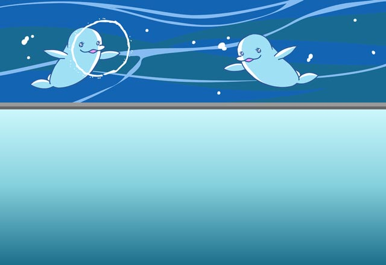

セリア
ここって、 あんまり危険性がない場所なんでしょ？
カル
ああ、グラデンスの爺さんからは、 そう聞いているよ。
セリア
なら、わざわざ私たちが、 来ることなかったんじゃない？
カル
うーん、 確かにそうなのかもしれないが……。
カル
でも、爺さんがわざわざ俺たちに 直接依頼してきたんだ。
カル
ま、軽い旅行気分で 探索すればいいじゃないか。
カル
普段はお目にかかれない珍しい光景が 見れるかもしれないぜ。
セリア
というか、そういう珍しい光景なら、 もう目の前に１つあるけどね。
セリア
…………わかってるわ、任務は任務。 疎かにするつもりはないわよ。
総統
先ほど召喚師さんたちが来た時は、 どうしようかと思ったが、
総統
しまねの観光名所を案内してやったら、 満足して帰ってくれたから良かったわい。
吉田
まったくです。しまねも まだまだ捨てたもんじゃないですね。
吉田
毎年自虐カレンダー作ってる我々が 言うのもなんですが。
総統
ふむ、この辺りは だいぶしまね化しているようじゃな。
総統
相変わらず元が１００円ショップの品物とは 思えん性能じゃわい。
吉田
はい。もうこれは誰がどう見たって しまね以外の何ものでもないです。
吉田
隠していたＨな本がまだ同じ場所にあるか、 確認するところでしたよ。
レオナルド博士
何言ってんだ。 こんなのまだ序の口だぞ？
レオナルド博士
お前ら、その調整が終わるまで、 時間稼ぎをしてこい！
レオナルド博士
それはできてからのお楽しみだぞ、オラッ！